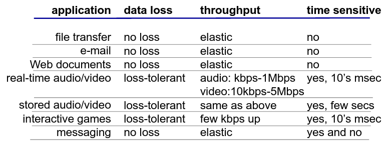
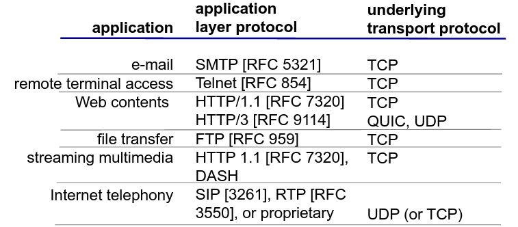
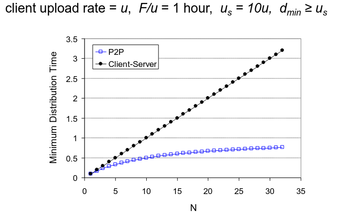

Camada Aplicacional
Camada Aplicacional
- Apesar da rede da Internet ter sido criada para a simples troca de documentos, hoje em dia, as aplicações presentes na Internet são de todos os tipos, podendo gerar uma quantidade de tráfego muito distinta entre elas.
- No entanto, a criação de uma app deve ser feita com a preocupação "exclusiva" que esta seja capaz de correr nos end systems, ignorando por completo os passos intermédios da app na rede.
End-to-End Principle
Quem desenvolve aplicações não tem de se preocupar com a rede e quem trata da rede não tem de se preocupar com as apps.
NOTA:
Hoje em dia, este processo não é bem estrito...
No fundo, tem de existir um pouco de preocupação mútua em ambos os lados da moeda...
Por exemplo, as operadoras de rede analisam o tráfego dos seus clientes, enquanto que os devs têm de ter conhecimento acerca dos protocolos de transporte disponíveis na rede.
Arquitetura de Aplicações
Em rede, as aplicações podem possuir diferentes arquiteturas. Por exemplo:
- Client-Server;
- Peer-to-Peer (P2P).
Arquitetura Client-Server
Servidor:
- Sempre online;
- Endereço de IP permanente;
- Utiliza data centers para permitir a escalabilidade.
Clientes:
- Comunicam com o servidor;
- Podem conectar e desconectar-se à vontade;
- Podem ter endereços de IP dinâmicos;
- Não comunicam diretamente entre si.
Arquitetura P2P
- Não têm um servidor sempre online;
- Os end-systems comunicam diretamente entre si;
- Um peer fornece/consome serviços a/de outros peers;
- Auto-escalável: novos peers fornecem novos serviços e trazem novos pedidos;
- Um peer é, simultaneamente, cliente e servidor.
- Tem processos tanto de cliente, como de servidor.
- Peers podem (des)conectar-se à vontade e trocam de endereços IP.
- Isto causa uma gestão complexa.
Comunicação de Processos
Um processo é um programa que se encontra a correr num dado host. Processos em hosts diferentes comunicam através da troca de mensagens.
Processo do Cliente: processo que inicia a comunicação.
Processo do Servidor: processo que espera até ser contactado.
Sockets
Os processos enviam e recebem mensagens através dos seus sockets que são análogos a uma porta.
Endereçamento de Processos
- De forma a receber mensagens, um processo deverá conter um ID.
- O ID inclui tanto o endereço IP como o número da porta associada ao processo no host.
\[ IPv4/IPv6 + Porta \]
- Porta do
HTTP Server: 80; - Porta do
Mail Server: 25.
Protocolo da Camada Aplicacional
Define:
- Tipo das mensagens trocadas;
- Syntax das mensagens;
- Semântica das mensagens;
- Regras relativas ao quando e como os processos devem receber/responder às mensagens.
Como decidir qual o serviço de transporte a utilizar?
Depende dos requisitos da aplicação em questão, devendo ter os seguintes fatores em conta:
- Integridade dos dados;
- A app é capaz de tolerar faltas?
- Timing;
- Podemos ter delay?
- Largura de Banda;
- Há um valor mínimo necessário?
- Segurança;
- Precisa-se de assegurar encriptação, integridade, etc...?
De notar que apesar da maioria dos sistemas terem mais do que uma interface ativa, o TCP só tira partido de 1, pelo que apps mais recentes tendem a seguir outros protocolos de comunicação.


Segurança em TCP
De forma a providenciar segurança em TCP., deve-se correr o TLS (Transport Layer Security) que irá encriptar as conexões, providenciar integridade de dados e fornecer um sistema com autenticação end-to-end.
Tempo de Distribuição de Ficheiros
Pretendemos comparar as diferentes arquiteturas, tendo por base o tempo necessário para distribuir um ficheiro \( F \) por \( N \) clientes.
Devemos efetuar o estudo com base nos piores casos disponíveis:
Client-Server
- Transmissão do Servidor: deverá enviar de forma sequencial \( N \) cópias do ficheiro.
- Tempo para enviar 1 cópia: \( \frac{F}{u_{s}} \);
- Tempo para enviar \( N \) cópias: \( \frac{NF}{u_{s}} \).
- Cliente: Cada cliente deve fazer download de uma cópia do ficheiro.
- \( d_{min} \): menor taxa de download dos clientes;
- Tempo: \( \frac{F}{d_{min}} \)
\[ D_{c-s} \geq max{\frac{NF}{u_s}, \frac{F}{d_{min}}} \]
Ou seja, aumenta linearmente em \( N \).
Peer-to-Peer (P2P)
- Transmissão do Servidor: deverá dar upload de, pelo menos, uma cópia.
- Tempo para enviar uma cópia: \( \frac{F}{u_s} \) Cliente: Cada cliente deve fazer download de uma cópia do ficheiro.
- \( d_{min} \): menor taxa de download dos clientes;
- Tempo: \( \frac{F}{d_{min}} \)
- Clientes: Como um agregado devem fazer o download de \( NF \) bits.
- O upload rate máximo é de \( u_s + \sum{u_i} \)
\[ D_{P2P} \geq {\frac{F}{u_s}, \frac{F}{d_{min}},\frac{NF}{u_s+\sum{u_i}}} \]
Ou seja, apesar de \( NF \) aumentar linearmente em \( N \), o somatŕoio também o fará, visto que cada peer tratá a sua capacidade de servidor.
